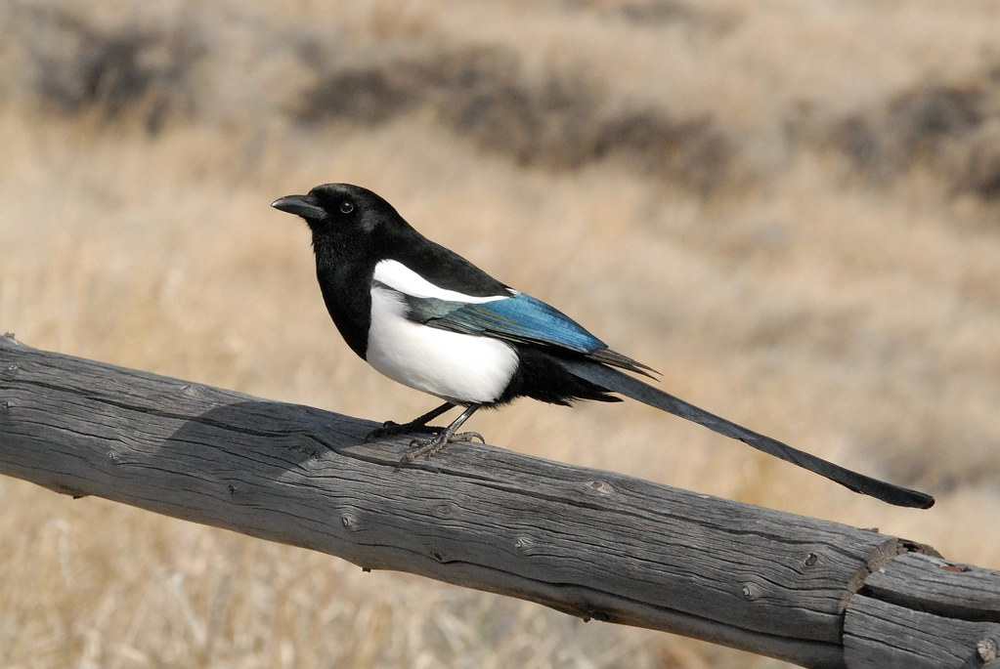

The magpie, belonging to the Corvidae family, is a highly intelligent bird found across the Northern Hemisphere. Recognized for its striking black and white plumage, the magpie thrives in various habitats, from urban areas to wooded landscapes.
Known for problem-solving skills, these social birds form tight-knit family groups and display cooperative behaviors. Their varied diet includes insects, small mammals, fruits, and carrion. Magpies are also notable for their diverse vocalizations, contributing to their success in different ecosystems. Despite cultural superstitions, magpies play a crucial role in ecological balance by controlling insect populations and aiding in seed dispersal.
Check out more information about magpies on Wikipedia